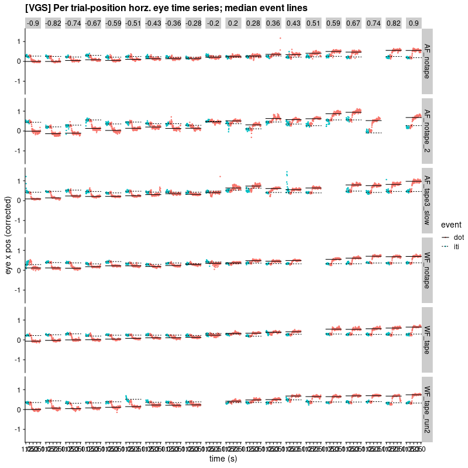
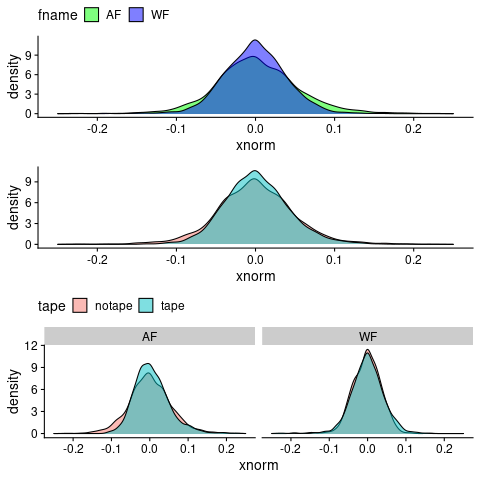
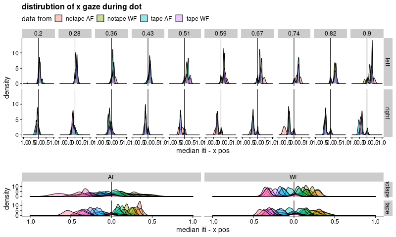

32 Channel Tape
;used minted package and python-pygments (require 'ox-latex) (add-to-list 'org-latex-packages-alist '("" "minted")) (setq org-latex-listings 'minted) (setq org-latex-pdf-process '("pdflatex -shell-escape -interaction nonstopmode -output-directory %o %f" "pdflatex -shell-escape -interaction nonstopmode -output-directory %o %f" "pdflatex -shell-escape -interaction nonstopmode -output-directory %o %f"))
#+end_src
Raw
surprisingly clear raw X position traces
plot_raw(med_all)
Distribution
Looking at the distribution of eye fixation during the last seoncd (post any visually guided saccade):
Tape vs no Tape
The difference between tape and no tape is not sigificant
dot_1s <- med_dot %>% filter(t>2) %>% mutate(xnorm=X_CorrectedGaze - dot)
t.test(data=dot_1s, xnorm ~ tape)
Welch Two Sample t-test
data: xnorm by tape
t = -1.6083, df = 6506.1, p-value = 0.1078
alternative hypothesis: true difference in means between group notape and group tape is not equal to 0
95 percent confidence interval:
-0.006913934 0.000682061
sample estimates:
mean in group notape mean in group tape
0.000973872 0.004089809
Might matter for more for lower quality data
dot_1s %>% filter(fname=='AF') %>% t.test(data=.,xnorm ~ tape)
Welch Two Sample t-test
data: xnorm by tape
t = -2.3179, df = 1540.2, p-value = 0.02058
alternative hypothesis: true difference in means between group notape and group tape is not equal to 0
95 percent confidence interval:
-0.019246746 -0.001602955
sample estimates:
mean in group notape mean in group tape
0.002698138 0.013122989
dot_1s %>% filter(fname=='WF') %>% t.test(data=.,xnorm ~ tape)
Welch Two Sample t-test
data: xnorm by tape
t = -1.4163, df = 2480.6, p-value = 0.1568
alternative hypothesis: true difference in means between group notape and group tape is not equal to 0
95 percent confidence interval:
-0.0048420964 0.0007808953
sample estimates:
mean in group notape mean in group tape
-0.0024533921 -0.0004227915
summary(lm(data=dot_1s, xnorm ~ tape*fname))
Call:
lm(formula = xnorm ~ tape * fname, data = dot_1s)
Residuals:
Min 1Q Median 3Q Max
-0.31320 -0.03113 -0.00258 0.02607 2.86668
Coefficients:
Estimate Std. Error t value Pr(>|t|)
(Intercept) 0.002698 0.001677 1.608 0.107780
tapetape 0.010425 0.002903 3.591 0.000331 ***
fnameWF -0.005152 0.002899 -1.777 0.075660 .
tapetape:fnameWF -0.008394 0.004102 -2.047 0.040741 *
---
Signif. codes: 0 ‘***’ 0.001 ‘**’ 0.01 ‘*’ 0.05 ‘.’ 0.1 ‘ ’ 1
Residual standard error: 0.07968 on 6782 degrees of freedom
Multiple R-squared: 0.004046, Adjusted R-squared: 0.003605
F-statistic: 9.184 on 3 and 6782 DF, p-value: 4.629e-06
Participant
but there is a signficant difference between AF (lights on, long time in scanner) and WF (lights off)
t.test(data=dot_1s, xnorm ~ fname)
Welch Two Sample t-test
data: xnorm by fname
t = 3.7554, df = 4376.1, p-value = 0.0001753
alternative hypothesis: true difference in means between group AF and group WF is not equal to 0
95 percent confidence interval:
0.003479549 0.011080645
sample estimates:
mean in group AF mean in group WF
0.006179244 -0.001100853
Both
For AF, tape/notape could also be first/second.
library(cowplot)
theme_set(theme_cowplot())
p <- ggplot(dot_1s) + aes(x=xnorm) + geom_density(alpha=.5) + lims(x=c(-.25,.25))
plot_grid(
p + aes(fill=fname) + theme(legend.position='top') +
scale_fill_manual(values=c('green','blue')),
p + aes(fill=tape) + theme(legend.position='bottom'),
p + aes(fill=tape) + facet_grid(~fname) + theme(legend.position='none'),
nrow=3)
plots
p_distside <- ggplot(med_dot) +
aes(x=x_norm, fill=paste(tape,fname)) +
cowplot::theme_cowplot() +
geom_density(alpha=.4)+
facet_grid(side~loc) +
geom_vline(xintercept=0) +
labs(x="median iti - x pos",
title="distirubtion of x gaze during dot",
fill="data from") +
lims(x=c(-1,1)) + theme(legend.position='top')
p_distfname <- ggplot(med_dot) +
aes(x=x_norm, fill=as.factor(pos)) +
cowplot::theme_cowplot() +
geom_density(alpha=.4)+
facet_grid(tape~fname) +
geom_vline(xintercept=0) +
labs(x="median iti - x pos",
title="",
fill="stim position") +
lims(x=c(-1,1))+ theme(legend.position='none')
p_dist_side_fname <- cowplot::plot_grid(p_distside, p_distfname,
nrow=2, rel_heights = c(2,1))
print(p_dist_side_fname)